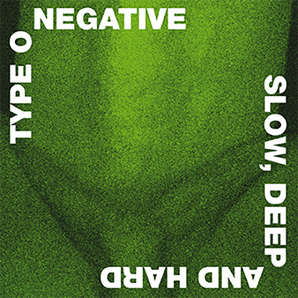
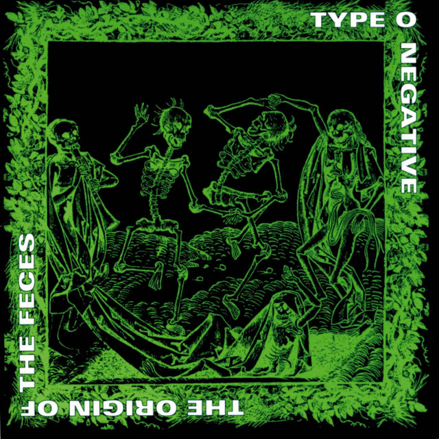
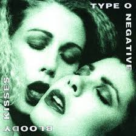

Type O Negative fue una banda de metal gótico formada en 1989 en Brooklyn, Nueva York. Liderada por Peter Steele, su estilo combinaba metal, doom, punk y rock gótico, destacándose por su humor negro, letras melancólicas y atmósferas sombrías. Con séxitos como "Black No. 1" y "Christian Woman", alcanzaron reconocimiento internacional, especialmente con los álbumes "Bloody Kisses" y "October Rust". La banda exploró temas de amor, pérdida, muerte y crítica social a través de un sonido que oscilaba entre lo melódico y lo agresivo. Activa hasta 2010, se disolvió tras la muerte de Steele, dejando un legado imborrable como pioneros del metal gótico y una influencia duradera en la música alternativa.
| ÁLbum | Carátula Año | Año |
|---|---|---|
| Slow, Deep and Hard |  | 1991 |
| The Origin of the Feces |  | 1992 |
| Bloody Kisses |  | 1993 |